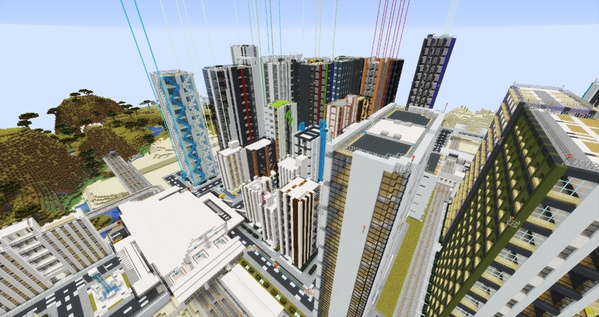
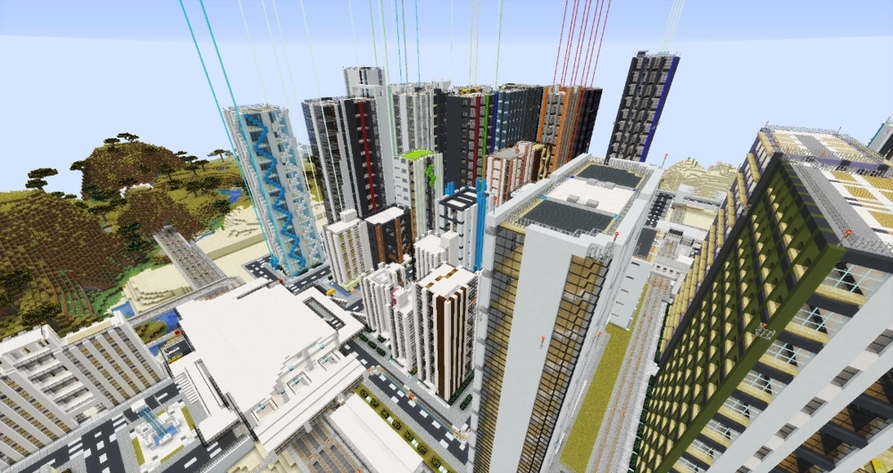

About

What's DKKN?
DKKNとは俺の創る大半のコンテンツの舞台である不思議な市『土故過野市』が由来です（一部作品を除く）。 ローマ字に変換して（dokokano）子音だけ残すと（DoKoKaNo）DKKNになります。
土故過野市はコンテンツによって設定が異なったり、世界観に関する描写が少なかったりしますが、 基本的には『高度かつ未知なる技術を持った超未来的なヤベー町』がコンセプトになっています。

DKKNとは俺の創る大半のコンテンツの舞台である不思議な市『土故過野市』が由来です（一部作品を除く）。 ローマ字に変換して（dokokano）子音だけ残すと（DoKoKaNo）DKKNになります。
土故過野市はコンテンツによって設定が異なったり、世界観に関する描写が少なかったりしますが、 基本的には『高度かつ未知なる技術を持った超未来的なヤベー町』がコンセプトになっています。